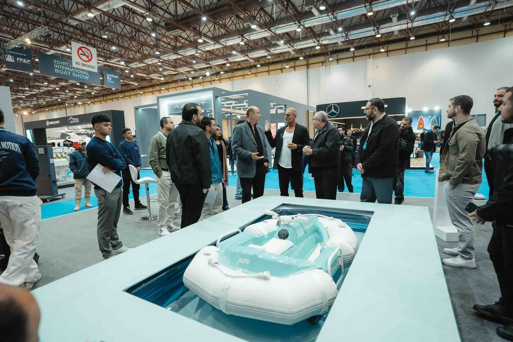

Conferences · Boat & Yacht
Egypt International Boat Show 2027
- Dates
- –
- Venue
- Cairo International Convention Centre
- Location
- Cairo, Egypt
- Format
- In-person
- Category
- Boat & Yacht
- Industry
- Yachting
- Organiser
- Egypt International Boat Show
- Official website
- https://egyptboatshow.com/
About
Egypt's international boat show at the Cairo International Convention Centre.
Topics: boat show, yachting, marine.
No organiser attendance figure found on the official pages fetched 24 Nov 2026 for this upcoming edition. Ranked by our estimated size tier 'medium' (10,000-30,000 attendees/visits), a judgement from format, venue and scale, not an official number.
Sources
- Official — https://egyptboatshow.com/
Venue
- Cairo International Convention Centre (Egypt Expo & Convention Authority) — Convention centre · Salah Salem St., Nasr City, Cairo, Egypt